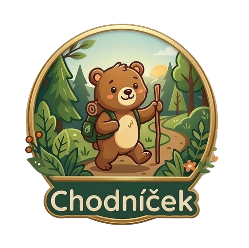

Vitaj v lese, mladý objaviteľ!
Táto aplikácia je tvojím sprievodcom na našom náučnom chodníku. Čaká ťa 35 zaujímavých zastávok plných prekvapení.
Ako na to?
1. Nájdi na strome tabuľku s QR kódom.
2. Klikni na tlačidlo nižšie a kód naskenuj.
3. Odpovedz na otázku a získaj body!
Prajeme ti príjemnú zábavu a veľa nových vedomostí o našej prírode.